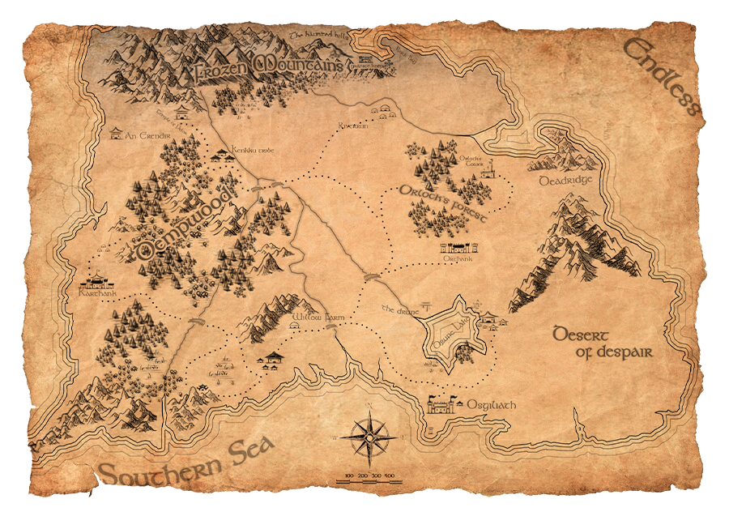

O tesouro de Beldoforth
Quinhentos anos atrás, após a grande batalha de Fandelver, os representantes das 3 grandes famílias de Beldoforth esconderam o tesouro obtido no final da guerra. Com a chegada do festival de comemoração de 500 anos da guerra, os burburinhos a respeito do tesouro começaram a se alastrar por Beldoforth. Dizem que ele está dentro de uma caverna amaldiçoada em Eriador, a parte obscura da Floresta de Beldoforth.
Cabe a você escolher um herdeiro para encontrar toda a fortuna e riqueza escondida.
